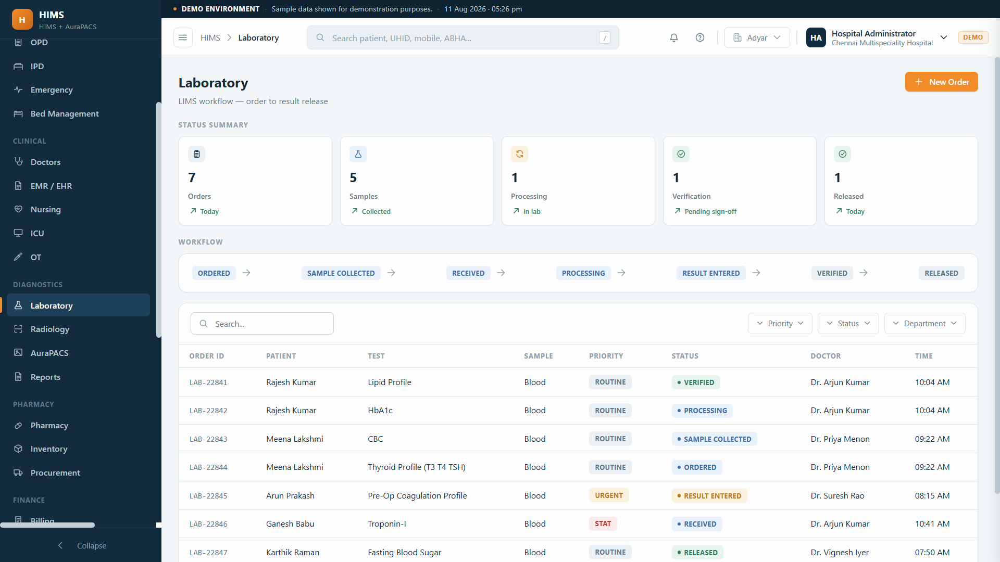

Doctors order tests from the record, samples are tracked by barcode, results are entered against reference ranges and validated, and reports land on the patient record and WhatsApp. No lost samples, no report queue.

When the lab runs on chits and a register, orders get lost, samples are mixed up, results are copied by hand, and patients queue for a printout that could have been on their phone.
Paper requisitions that never reach the bench.
No barcode, no clear chain of custody.
Patients waiting at the counter for printouts.
From the record.
Barcode the sample.
Bench and analyser.
Against ranges.
Record and WhatsApp.
Validated results, flagged and delivered automatically.
OP and IP orders.
Standalone centres.
Clear worklist.
Validate and sign.
Results on the record.
Reports on the phone.
Our imaging product has a live demo, so diagnostic reporting is proven territory for us.
Elevate Aura builds WhatsApp automation, so report delivery that actually lands is core to us.
Founder-led delivery, so you talk to the builder.
Doctors order tests from the patient record and the order lands in the lab worklist, so there is no paper requisition to chase.
Yes. Each sample gets a barcode or ID and is tracked from collection to result, so nothing is lost or mixed up.
Yes. Results are entered against reference ranges and validated by a reviewer before they reach the doctor and patient.
Reports post to the patient record and can be delivered on WhatsApp or the patient app, so no one waits at the counter.
The LIMS is designed to support analyser integration so machine results can flow in. It is part of the full hospital system.
Tell us how your lab takes orders and delivers reports today. We will put it on one worklist, validated and delivered to the patient.
Sample tracking · Validation · WhatsApp reports